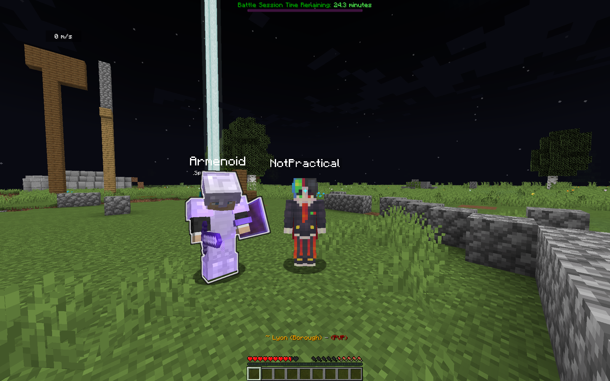

Siegewar is a war system that allows nations and towns to settle disputes.
Nations can create sieges against enemy towns, which are 3 day battles. The attackers can plunder and invade the town if they win.
If you would like to research this more in-depth, you can look at siegewar's general wiki here (do note that we have disabled the global domination awards system).

In order to regulate wars, make them more fun, and fair for all players, you cannot siege another town without applying for one.
To apply to siege another town, you must be the king of your nation. Next, open a ticket on the discord server with your nation, the town you would like to siege, and a valid war reason.
Valid war reasons include, but are not limited to, killings, secession from a nation, and border disputes.
If your ticket is denied, you are not allowed to war or make a new request with that reason. Unlawful sieges can result in bans and your town/nation being deleted (in extreme cases).
If your request is accepted, it will be announced in the wars channel on discord, and you will have to wait 24 hours to begin the siege. If you do not start the siege a week after your request was accepted, the war will be cancelled.
To start a siege, first enemy the opposing nation. To do this, do /n enemy add <nationName>. Next, go to a wilderness chunk bordering one side of the enemy town. Place a non-white banner to begin the siege.
When starting a siege, a "warchest" is deposited. This warchest will be given to the winner of the siege. The warchest value is (50 * amount of plots in the town), or if the town is the capital of a nation, (75 * amount of plots in the town).
The result of a siege is usually determined by the battle points balance. Only users that have a nation military rank, and are directly involved in the battle (attacked, attacker, and allies) can earn points. Points that the attackers get will add to the point total. Points that the defenders get will subtract from the point total. The amount of battle points is capped at -20,000 and +20,000.
BEWARE NON-AFFILIATED PLAYERS! Players that are not affiliated with either side will gain war sickness (poison, slowness, and nausea) upon entering a siege zone!
Sieges happen in battle sessions. Battle sessions last from ten minutes past the hour until the end of the hour (e.g. 10:10 to 11:00). This gives you a 10 minute break every hour. No points can be earned in-between sessions.
The first (and main) way of getting battle points is to obtain and keep banner control. To gain banner control, stay alive beside the banner, being at level or slightly above it (not in the sky) for 7 minutes. If you are successful in this, your side will gain banner control. If your side already has banner control, your side will get extra bonus points. The side with banner control will get 10 points per player that has banner control every 20 seconds. If a banner reversal happens in the middle of a battle session, the point amount generated will double. For example, team A captures the banner and makes 10 points per player/20 seconds. If team B captures it, they will gain 20 points per player/20 seconds. If team A recaptures it, they will gain 40 points per player/20 seconds.
The other way of gaining battle points is if an eligible siege participant dies in the siege zone. This will give 150 points to the opponent. If a player from the side with banner control dies, then the point amount will be increased by (10 * amount of people with banner control)%
Either side can surrender if the king or a general places a white banner. This side will lose the siege and end it early.
If either side surrenders, the winner of the war will be the side that did not surrender.
If neither side surrendered, then at the end of the 3 day war, the winner is determined by the amount of battle points. If the points balance is greater than 0, the attackers win. If it is equal to or less than 0, the defenders win.
In both cases, the warchest is given to the winning town. The defender also gains "siege immunity" for the length of the siege * 3, meaning they cannot be sieged, whether they win or lose.
The winning nation's king can do /sw nation paysoldiers <amount>, giving all soldiers payment equal to their militay rank. Soldiers can do /sw collect to collect this money.
If the attackers win, they get the warchest back (the cost to siege) and get to plunder and occupy the town. To plunder the town, place a chest next to the town. This will give you $10 per plot the town has claimed. Placing a banner will occupy the town, making them count towards your nation's member count on /n list.
When the defender loses, they gain revolt immunity for the length of the siege * 0.75. After this time is up, they can revolt against the occupying nation to gain there freedom. This requires a war request to be opened (to give the occupier time to prepare). Revolt sieges function like regular sieges, except to start them, the revolting town places a banner outside of their own town.
The peacefulness/war opt out setting for towns was disabled.